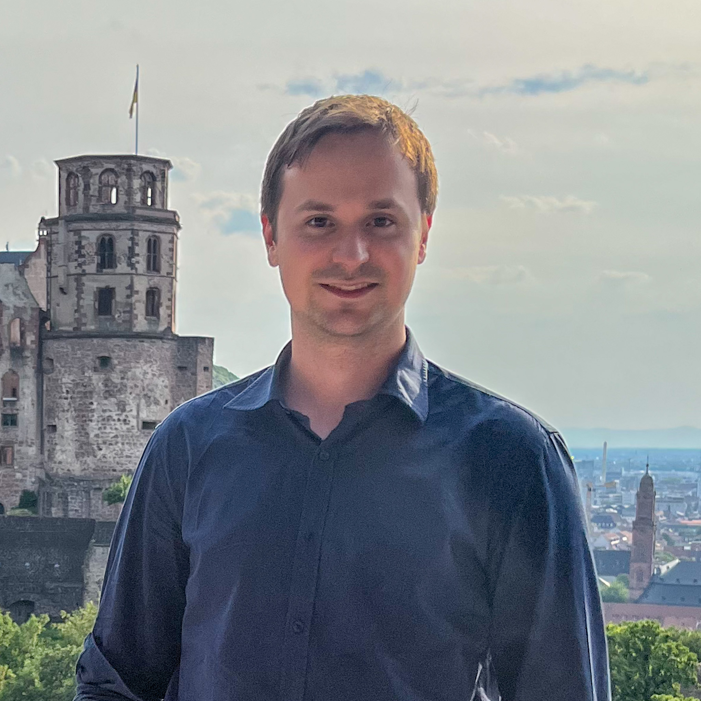

Hello, thanks for visiting my page. I am a Ph.D. student in computer science at DTU, in Copenhagen. I am working under the supervision of Prof. Dim P. Papadopoulos and Prof. Serge Belongie and member of the Belongie Lab. My research focuses on image synthesis and visual understanding with diffusion models. Outside research, I enjoy making art.
You can reach me out via email: marscho [at] dtu [dot] dk
Google Scholar |
GitHub |
LinkedIn
Sherlock Your Queries: Learning to Ask the Right Questions for Dialogue-Based Retrieval
Dong Yun, Marco Schouten, Dim P. Papadopoulos
arXiv, 2025
POEM: Precise Object-level Editing via MLLM control
Marco Schouten, M. Onurcan Kaya, Serge Belongie, Dim P. Papadopoulos
SCIA, 2025 | webpage
An ASP-based Approach to Master Surgical Scheduling
Linda Cadermatori, Giuseppe Galatà, Carola Lo Monaco, Marco Maratea, Marco Mochi, Marco
Schouten
CILC, 2022 | PDF
Answer Set Programming in Healthcare: Extended Overview
Mario Alviano, Riccardo Bertolucci, Matteo Cardellini, et al., Marco Schouten
IPS-RCRA@AI*IA, 2020 | PDF